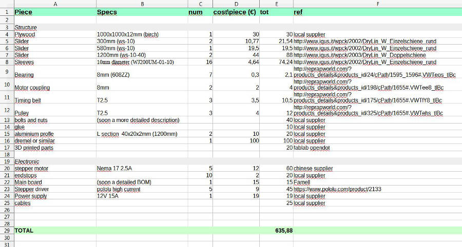
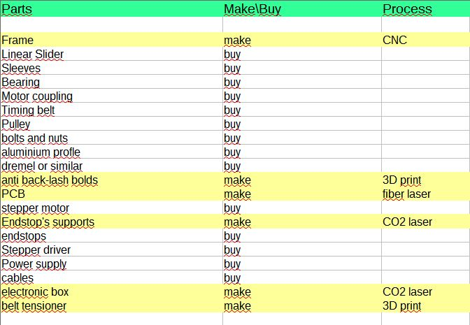

15. Application and Implication // Final Project: Analysis and Research
What will it do?
Smill is a CNC milling machine with the following goals:
- make pieces bigger than it
- don't be bulky, in particular when it's not in use
- be self-replicable
- be as affordable as possible
- be as precise as possible
To do so, it has a round frame and a particular Z-axis movement to reduce the forceloop. It's made with CNC milling and standard, cheap components.
Who's done what beforehand?
Here some exhisting projects that I considered inspiring:
Grow CNC

interesting concept of alternative CNC, definitely able to cut pieces bigger that it.
Impulsive Furnishing unit

Very nice project, based on the idea to bring the machine where you need it to make stuff. No working bed, it cuts directly the panel it lays on.
Still pretty bulky.
Green Lean
Entirely made in wood it gave ma a lot of suggestion and it's vertical
Phlat Printer
Very similar to what i had in my mind, still too big and the it moves the panel works for foams but probably not with more rigid materials.
Othercutter
Beautiful project, very clever idea, it works with soft material but probably not with plywood or similar (even if the blade would be changed with a spindle)
What materials and components will be required? \\ Where will they come from?
The project is divided in different parts:
- Structure
- Electronic
- Firmware
- Software
- standard parts
The structure, the pcb, and the smaller funcional parts are made with CNC milling machine, lasercutter, and 3D printer.
I started from the work done by Shapeoko, for the electronic, studying the board to implement mine.
The formware is a standard g-code interpreter (grbl) edited to match the pitch of the pulleys i'm gonna use and the pins of the microcontroller that will give step+dir to the motors.
I tried different CAM and in the end the tests I did were done using the fab modules online.
Beside specific componenets bought online from china or european suppliers like Reprap World, everyting else is easily available in a local hardware store.
How much will it cost?
An approx estimation of the price is:

What parts and systems will be made? What processes will be used?
Here a simplified part list and if it's made or bought, as well as how it's made if it is.

What task need to be completed?
I have to assemble everything together and test the result.
what question need to be answered
The main questions right now are about the way i choose to move the axis, I'm not sure about the rigidity and the behave of the machine, but the only way to get to an answer is testing a working prototype. So I decide I will not go on implementing new solutions or ideas until I'll get to a fully working version of the machine.
What is the schedule?
I usually calculate the timing starting from the delivery, back to today. Between the 13th of May and the and the 24th of JUne I have 15 half-days and 14 full days, working just on this during the week and week-end if but the time needed for meetings, workshops, speeches, university lessons and exams.
I can't calculate these as 100% efficient working time and i need a backup in case of emergency. So I considered 20 half-days, defined from now on "hD" (more or less the 50% of the total time available), divided in this way:
- 1hD to test the assembled PCB and check if it read a standard g-code
- 2hD to read, understand, and edit the GRBL
- 1hD to assemble the second version of the frame
- 1hD to check the 3D printed parts and eventually edit them
- 1hD to check all the movements by hand
- 3hD to assemble everything together
- 1hD to connect everything, prepare the cables, etc.
- 2hD to test connection, electronic, movement, and fix it as much as possible
- 1hD to implement the microstepping and recalibrate the machine
- 1hD find the most efficient way to generate g-codes to test the machine
- 2hD to cut the pieces and test the entire process
- 4hD to implement and refine the documentation, including the material for the final presentation
How will it be evaluated?
This is going to be my evaluation grid for the project:
- Sufficient: get to a smooth mechanical design, where all the axis move properly without the motors
- Decent: be able to move all the axis using a debugging application done in Processing + firmata on the board
- Good: be able to move all the axis using a modified version of grbl + grbl controller
- Ninja: send a standard g-code to the CNC
- Jedi: cut the frame for another Smill with the Smill
- Yoda: cut with Smill an object bigger that Smill itself